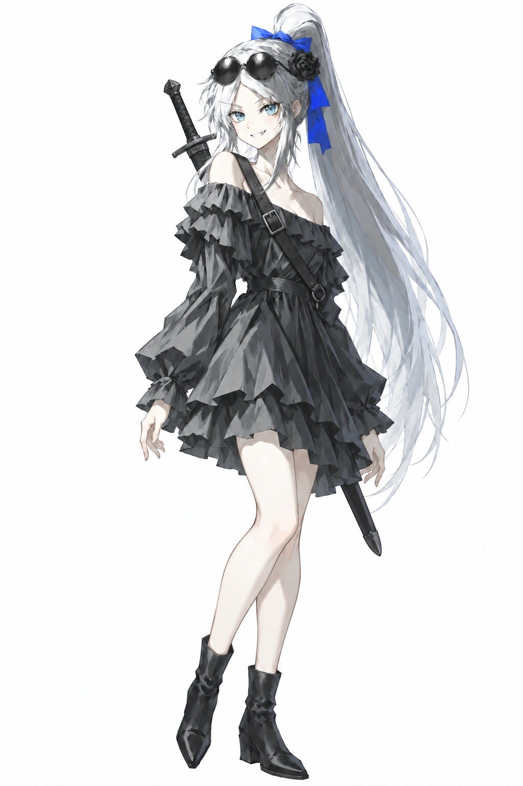

轮廓完整，用色彩与光影建立风格
初版美术 Demo：结构清楚，内部色块简略；优先整体色彩、大块明暗和光影氛围，减少碎线与密集高光。
点击图片放大。先选喜欢的图，再告诉我喜欢它的哪一部分：色彩 / 光影 / 线条 / 构图。下方观察是初步分析，尚未成为项目规范。

A2 · 咒术回战2 / 涩谷事变

B1 · 无职转生 / 魔法大学篇

B2 · 无职转生 / 转移迷宫篇

C1 · 明日方舟 / 五周年主视觉

D1 · 代号柒 / 现有选人立绘「无」
看什么：完整外轮廓、冷灰黑衣与银发的块面、局部蓝色身份点缀。
小样建议：保留角色身份和块面概括，在此基础上试外部参考的光色。
来源：game/assets/portraits/full/wu.webp，引用原件。